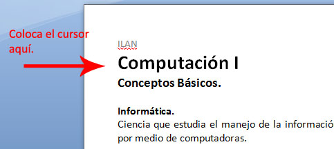

Saltos
7. El documento necesita una tabla de contenido y una portada, para esto vamos a insertar una nueva sección.
Coloca el curso al inicio del documento, a la izquierda de la palabra Computación.

Da clic en la pestaña Diseño de página, después en el botón saltos y finalmente en página siguiente. Observa abajo:

Aparece una hoja en blanco, pero tiene el mismo pie y encabezado que el documento. Si borráramos ahora el pie y encabezado de esta página, también se borraría el del resto del documento, necesitamos primero desvincular el pie y el encabezado de cada sección. Sigue los siguientes pasos para realizarlo: